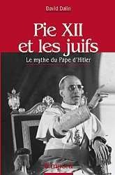

Reprise de ma première mise en ligne de cet article, le 30.09.2007, sur le site Rivtsion.org.
La présence de trois erreurs majeures, dans la cinquantaine de lignes du chapitre 2 de l'ouvrage sous revue (voir les notes [2] et [3] ci-après), jette le doute sur la maîtrise qu'a l'auteur, du sujet qu'il traite. Cette infortune peu commune justifie le bien-fondé des mises en garde répétées d’historiens chevronnés, dont celle – classique, mais trop souvent enfreinte –, qui dénonce l’usage de l’apologétique en lieu et place de la recherche objective de la vérité des faits. Sous réserve d'inventaire, il me semble, justement, que, dans son livre, le rabbin Dalin fait davantage oeuvre d'apologète que d'historien.
09/07/07 [Sous le titre "Pie XII et les Juifs, du rabbin David Dalin", Pierre-Marie Monestier a mis en ligne sur le site Pie12.com, une présentation, brève mais extrêmement élogieuse – pour ne pas dire enthousiaste –, de l'ouvrage du rabbin et professeur américain, David Dalin, entièrement consacré à la défense de la réputation de Pie XII, contre les soupçons et les accusations dont son attitude et ses actes, durant la Seconde Guerre mondiale, ont été l'objet, ainsi que des extraits de deux chapitres de cet ouvrage. On y trouvera des citations de cet article, beaucoup plus substantielles que ce qui figure ici. Elles sont suivies de commentaires de mon cru.] Publié par les éditions Tempora, l'ouvrage 1 est en vente dans toutes les librairies de France, de Navarre et des pays francophones! Préfacée par le père Blet, vendue à des dizaines de milliers d'exemplaires dans le monde, cette étude sérieuse et fondée sur une avalanche de faits est considérée comme une référence dans le domaine par de très nombreux historiens. Nous pouvons citer, entre autres: le père Pierre Blet, sir Martin Gilbert, Mme Limore Yagil, Jose M. Sanchez, Ronald J. Rychlak, Margherita Marchione, Ralph McInerny, Justus George Lawler, etc.
Présentation de l’ouvrage par l'éditeur

Pie XII n'a pas été le pape de Hitler, comme certains de ses détracteurs voudraient nous le faire croire. Bien au contraire, ce pape de la Seconde Guerre mondiale a lutté, dès les premières heures du régime nazi, pour sauver les victimes de l'antisémitisme. Par une multitude de faits historiquement établis, le rabbin et professeur David Dalin démonte le mythe qui affirme que Pie XII serait le "Pape de Hitler", prouvant ainsi l'inanité d'attaques scandaleuses telles que celle de l'ouvrage de John Cornwell, intitulé The Hitler's pope. Imputer la condamnation qui revient à Hitler et aux Nazis, à un pape qui s'opposa à eux et était ami des juifs, est une abominable calomnie. Quels que soient leurs sentiments vis-à-vis du catholicisme, les juifs ont le devoir de rejeter toute polémique qui s'approprie la Shoah pour l'utiliser dans une guerre des progressistes contre l'Eglise catholique. Si un tel combat devait être couronné de succès, cela minerait les fondements du Christianisme ainsi que du judaïsme, du fait de l'incommensurable mépris de la vérité et de la religion traditionnelle, dont ces détracteurs sont animés. Rétablir la vérité, c'est le leitmotiv du rabbin Dalin. Et il s'exécute de manière magistrale, nous faisant pénétrer dans les coulisses diplomatiques de l'histoire et réclamant pour Pie XII le titre de "Justes des Nations", en reconnaissance des si nombreuses vies juives sauvées par ce pape. L'auteur
Le rabbin David Dalin, spécialiste de l'Histoire juive américaine et des relations juives et chrétiennes, professeur d'Histoire et de Sciences-Politiques à Ave Maria University, est auteur de plusieurs livres sur l'histoire juive, en particulier Religion and State in the American Jewish experience, ouvrage sélectionné par Choice comme l'un des meilleurs travaux académiques en 1998.
---------------
Extrait du premier chapitre: « Le "pape d'Hitler", un mythe préoccupant » Repris du site Pie12.com.
… il s'agit d'une utilisation abusive de la Shoah, à laquelle les juifs doivent s'opposer. On n'a pas le droit, honnêtement, d'exploiter cette tragédie à des fins partisanes, dans un pareil débat. Et c'est vrai, en particulier, quand cette pratique aboutit à déprécier le témoignage des survivants qui ont fait l'éloge du souverain pontife pour ses actions en leur faveur. Imputer la condamnation qui revient à Hitler et aux Nazis à un pape qui s'opposa à eux et était ami des juifs, est une abominable calomnie. Quels que soient leurs sentiments vis-à-vis du catholicisme, les juifs ont le devoir de rejeter toute polémique qui s'approprie la Shoah pour l'utiliser dans une guerre des progressistes contre l'Église catholique. Si un tel combat devait être couronné de succès, cela minerait les fondements du Christianisme ainsi que du judaïsme, du fait de l'incommensurable mépris de la vérité et de la religion traditionnelle, dont ces détracteurs sont animés. Michael Tagliacozzo, la plus éminente autorité sur la rafle des juifs de Rome par les Nazis, et lui-même rescapé de cette rafle, a énergiquement défendu le rôle de Pie XII pendant l'occupation de Rome par les Nazis, rapportant que celui-ci s'impliquait personnellement dans les opérations entreprises pour sauver la vie d'environ cinq mille juifs romains. C'est sur les ordres du pape que ces derniers furent hébergés à l'intérieur du Vatican et dans les nombreux monastères et couvents de Rome. Ayant vécu la terreur de l'occupation nazie à Rome, ayant étudié les documents d'origine sur le sujet, Tagliacozzo n'avait, à l'encontre [lire: à l’égard] de Pie XII, que des éloges. Depuis 1962, Yad Vashem, le mémorial et musée de la Shoah en Israël, reconnaît et honore les "Justes des nations", ces non-juifs qui ont sauvé la vie de juifs durant la Shoah. Des millions de gens ont vu le film de Steven Spielberg, "La Liste de Schindler", qui parle d'Oskar Schindler, l'industriel catholique allemand qui sauva la vie de 1 200 juifs. Beaucoup aussi ont entendu parler de Raoul Wallenberg, le jeune diplomate suédois dont il est reconnu qu'il sauva des dizaines de milliers de juifs, à Budapest, pendant la guerre, et de Mgr Angelo Rotta, l'héroïque ambassadeur du Vatican en Hongrie. D'autres prêtres catholiques impliqués dans le sauvetage des juifs, comme le Cardinal Pietro Palazzini, ont été de même, honorés par Israël. Pie XII, lui aussi, mérite d'être reconnu comme "Juste des nations" et c'est ce que je démontre dans le présent ouvrage. Aucun autre pape dans l'histoire n'a jamais, auparavant, été comme lui, aussi universellement loué par les juifs pour ce qu'il a fait pendant la Shoah, pour sauver des vies.
Extrait du deuxième chapitre: Des papes qui défendirent les juifs
La vérité historique c’est que les papes se sont souvent manifestés pour prendre la défense des juifs, qu’ils les ont protégés dans les temps de persécution et de pogroms et ont préservé leur droit d’exercer librement leur culte dans les synagogues. Ils ont, traditionnellement, défendu les juifs contre toutes sortes d’accusations antisémites aberrantes. Ils ont régulièrement condamné les antisémites qui cherchaient à susciter la violence contre les juifs. Certains avaient des juifs comme médecins, au Vatican, et aussi parmi leurs confidents et amis personnels. On ne trouve aucun de ces faits dans les livres de ces détracteurs et pourtant, ils sont avérés (...) Au fil des années 1930, Pie XI en vint à considérer Hitler comme « le plus grand ennemi, de nos jours, du Christ et de l’Église », et il le comparait à l’Antéchrist. Il déclarait: « La persécution contre l’Église catholique d’Allemagne » est l’œuvre d’Hitler, entièrement et uniquement son œuvre ». Parlant au Collège des Cardinaux, dans un de ses discours annuels pour la fête de Noël, il dénonça vigoureusement à la fois le fascisme italien et le fascisme allemand, et qualifia la svastika nazie de « croix hostile à la Croix du Christ ». Le 12 mars 1937, il publia sa fameuse encyclique anti-nazie, Mit brennender Sorge (« Avec une vive inquiétude »). Adressé aux évêques allemands et lu en chaire, intégralement, dans toutes les églises catholiques d’Allemagne, ce document provoqua une riposte rageuse du gouvernement nazi à Berlin. L’encyclique ne mentionnait pas spécifiquement l’antisémitisme nazi, elle se concentrait plutôt sur la manière dont « le paganisme agressif » persécutait l’Église catholique en Allemagne. Mais elle a certainement touché juste en déclarant: « Qui veut voir bannies de l’Église et de l’école l’histoire biblique et la sagesse des doctrines de l’Ancien Testament, blasphème le nom de Dieu, blasphème le plan de salut du Tout-Puissant, érige une pensée humaine étroite et limitée en juge des desseins divins sur l’Histoire du monde. Il renie la foi au Christ véritable ». Le document pontifical déclare aussi: « ‘Révélation’, au sens chrétien du mot, désigne la parole dite par Dieu aux hommes. Employer ce même mot pour les ‘suggestions’ du sang et de la race, pour les irradiations de l’histoire d’un peuple, c’est, à coup sûr, créer une équivoque. Une fausse monnaie de cette sorte ne mérite pas de passer dans l’usage des fidèles du Christ ». Ayant clairement reconnu, dans Mit brennender Sorge, un document décidément favorable aux juifs [2], les Nazis lancèrent une contre-attaque au vitriol contre la papauté. Le ministère nazi de la propagande alla jusqu’à faire circuler une rumeur selon laquelle Pie XI aurait été à moitié juif, et sa mère, une juive hollandaise.
En 1938, au moment même où le premier ministre britannique, Neville Chamberlain, tentait d’apaiser Hitler, à Munich, Pie XI apparut comme l’une des rares autorités en Europe à explicitement condamner l’antisémitisme. En mars 1938, il dissoudra l’Association des « Amis d’Israël » (Amici Israel), une organisation catholique qui depuis de nombreuses années s’efforçait de convertir des juifs et qui avait commencé à publier des brochures « manifestant des sentiments de haine » envers le peuple juif [3]. On peut lire dans le décret
2 Faire de Mit brennender Sorge, « un document décidément favorable aux juifs », est caractéristique de la tendance à l'apologie, voire au panégyrique des fervents défenseurs de l’honneur de l’Eglise, en général, et de celui des papes, en particulier, à propos de l’attitude de cette institution face au drame de la Shoah, et de l’action ou de l’inaction de certains responsables ecclésiastiques contemporains de ces événements. Il n’est que de se reporter au texte de cette encyclique pour se convaincre qu’elle ne prend pas la défense des Juifs, en particulier, mais celle de l’Ancien Testament. Il y est si peu question des Juifs, que ce terme n’y figure absolument pas. Pas plus d’ailleurs que ceux d’"israélite", ni d’"Israël". Pire, les deux seules allusions au "peuple" juif (sans cet adjectif d'ailleurs) sont péjoratives; qu'on en juge: 1) A propos des Livres sacrés, Pie XI explique: "À côté d'innombrables traits de grandeur et de noblesse, ils nous décrivent aussi le peuple choisi, porteur de la Révélation et de la Promesse, s'égarant sans cesse loin de son Dieu pour se tourner vers le monde; 2) il parle également du "Christ qui a reçu son humaine nature d'un peuple qui devait le crucifier". La phrase introductive de l'encyclique témoigne clairement de sa nature et de son but: « C'est avec une vive inquiétude et un étonnement croissant que depuis longtemps Nous suivons des yeux les douloureuses épreuves de l'Église et les vexations de plus en plus graves dont souffrent ceux et celles qui lui restent fidèles par le coeur et la conduite, au milieu du pays et du peuple auxquels saint Boniface a porté autrefois le lumineux message, la bonne nouvelle du Christ et du Royaume de Dieu. » Il est donc bien clair que ce que déplore le pape, ce ne sont pas les misères des Juifs, comme tente de nous le faire accroire le rabbin professeur Dalin, mais celles dont sont victimes l'Eglise et la foi des fidèles. Pour mémoire, une exégèse erronée de même nature a déjà été faite, à propos des sermons du cardinal allemand Faulhaber, réputés prononcés en défense des Juifs, alors qu’il s’agissait d’une défense de l’Ancien Testament, que répudiaient les "Deutsche Christen", chrétiens acquis aux thèses raciales nazies et partisans d'une Église d'obédience national-socialiste. (Voir: "Le Cardinal Faulhaber a-t-il tenu tête à l'antisémitisme nazi dans les années 30?", et "Le cardinal Faulhaber et l'antisémitisme nazi des années trente"). Il est atterrant de constater, comme je l'ai fait ailleurs, il y a quelques années, que cette contrevérité figure dans une note de la Déclaration romaine du 16 mars 1998, dite "de Repentance" et intitulée «Nous nous souvenons» (texte français dans La Documentation Catholique n° 2179, du 5 avril 1998, pp. 336-340). On peut y lire l'assertion suivante, censée s'appuyer sur quelques pages d’un ouvrage de l'historien allemand L. Volk (Der Bayerische Episkopat und der Nationalsozialismus 1930-1934, Mainz, 1966, pp. 170-174; cité dans La Documentation Catholique, op. cit., p. 340, n. 11), consacré à l’étude des rapports entre l’épiscopat de Bavière et le National-Socialisme dans les années 1930-1934: « Les sermons bien connus du cardinal Faulhaber en 1933, l'année même où le national-socialisme parvint au pouvoir [...] exprimèrent clairement le rejet exprès de la propagande antisémite nazie ».
3 C'est la double erreur la plus atterrante de l'auteur. Tout d'abord, l'association Amici Israel n'a pas été dissoute en mars 1938, mais dix ans auparavant, en mars 1928. Ensuite, non seulement elle n'avait
pontifical de dissolution: « Parce qu’il réprouve toutes les haines et animosités entre les peuples, le Siège apostolique condamne au plus haut point la haine contre le peuple autrefois choisi par Dieu, cette haine qu’aujourd’hui on a coutume de désigner sous le nom d’antisémitisme ».
© Pie12.com ------------------------------ Nota: J’ai approfondi ce sujet dans mon article intitulé: Pie XII pape de Hitler: certainement pas, mais Juste des nations, c'est pour le moins prématuré.
Texte mis en ligne sur le site Academia.edu, le 13 juillet 2018
pas, comme l'affirme le rabbin Dalin, « commencé à publier des brochures manifestant des sentiments de haine envers le peuple juif », mais elle s'était, au contraire, distinguée par son zèle (jugé alors intempestif par beaucoup) pour l'expurgation des nombreuses formules blessantes pour les Juifs, qui émaillaient tant la liturgie catholique que les ouvrages de théologie et de piété de l'époque. Sur l'histoire, l'action et la doctrine de cette pieuse association, je me permets de renvoyer à mes études:« Essai d’élucidation des causes et circonstances de l’abolition, par le Saint-Office, de l’"Opus sacerdotale Amici Israel" (1926-1928) »;L’Eglise à l’épreuve des Juifs. La suppression de l’Opus sacerdotale ‘Amici Israel’ par l’Eglise. Ces inexactitudes graves illustrent le caractère superficiel de la connaissance du sujet, qui est celle du rabbin professeur Dalin. Et elle est d'autant plus impardonnable (a fortiori pour un historien), qu'il est très facile à quiconque d'accéder à une information exacte sur le sujet, par différents moyens. Une simple recherche sur Google, par exemple, eût permis à l'auteur de découvrir, en anglais et en d'autres langues, ce qui est communément connu sous le nom des "Dix points de Seelisberg". En lisant le texte ci-dessous (repris d'un site protestant, mais il figure également sur d'autres sites, catholiques et même juifs et non confessionnels, y compris en anglais), on aura tôt fait de comprendre que l'attitude des Amici Israel envers les Juifs était tout sauf animée de "sentiments de haine": 1. Rappeler que c’est le même Dieu vivant qui nous parle à tous, dans l’Ancien comme dans le Nouveau Testament. 2. Rappeler que Jésus est né d’une vierge juive, de la race de David et du Peuple d’Israël, et que Son amour éternel et Son pardon embrassent son propre peuple et le monde entier. 3. Rappeler que les premiers disciples, les Apôtres et les premiers martyrs étaient juifs. 4. Rappeler que le précepte fondamental du Christianisme, celui de l’amour de Dieu et du prochain, promulgué déjà dans l’Ancien Testament, et confirmé par Jésus, oblige "Chrétiens et Juifs" dans toutes les relations humaines, sans aucune exception. 5. Éviter de rabaisser le judaïsme biblique ou post-biblique, dans le but d’exalter le christianisme. 6. Éviter d’user du mot "Juifs" au sens exclusif de "ennemis de Jésus" ou de la locution "ennemis de Jésus" pour désigner le peuple juif tout entier. 7. Éviter de présenter la Passion de telle manière que l’odieux de la mise à mort de Jésus retombe sur les Juifs seuls. Ce ne sont pas les Juifs qui en sont responsables, car la Croix, qui nous sauve tous, révèle que c’est à cause de nos péchés à tous que le Christ est mort. Rappeler à tous les parents et éducateurs chrétiens la grave responsabilité qu’ils encourent du fait de présenter l’Évangile et surtout le récit de la Passion d’une manière simpliste. En effet, ils risquent par-là d’inspirer, qu’ils le veuillent ou non, l’aversion dans la conscience ou le subconscient de leurs enfants ou auditeurs. Psychologiquement parlant, chez des âmes simples, mues par un amour ardent et une vive compassion pour le Sauveur crucifié, l’horreur qu’ils éprouvent tout naturellement envers les persécuteurs de Jésus, tournera facilement à une haine généralisée des Juifs de tous les temps, y compris ceux d’aujourd’hui. 8. Éviter de rapporter les malédictions scripturaires et le cri d’une foule excitée: « Que son sang retombe sur nous et sur nos enfants », sans rappeler que ce cri ne saurait prévaloir contre la prière infiniment plus puissante de Jésus: « Père, pardonnez-leur car ils ne savent pas ce qu’ils font ». 9. Éviter d’accréditer l’opinion impie que le peuple juif est réprouvé, maudit, réservé pour une destinée de souffrances. 10. Éviter de parler des Juifs comme s’ils n’avaient pas été les premiers à être de l’Église.
1 David Dalin, Pie XII et les Juifs, le Mythe du Pape d'Hitler, en vente sur le site d'Amazon, et sur celui de librairie catholique.com ↩